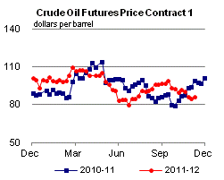

Released: November 15, 2012
Next Release: November 21, 2012
Post-Sandy Look at Gasoline Data Shows Market Stresses in Affected Regions
Petroleum data for the week ending November 9 released today by the U.S. Energy Information Administration (EIA) provide the second set of data to assess the impacts of Hurricane Sandy on U.S. petroleum markets. The storm significantly disrupted electricity, natural gas, and petroleum product supply infrastructure in the Northeast and affected millions of consumers. However, the data from the first week following Hurricane Sandy showed falling gasoline inventories in the Northeast Petroleum Administration for Defense Districts (PADDs 1A and 1B) including the New England states, New York, New Jersey, Pennsylvania, and Delaware, the region hit hardest by the storm (Figure 1), as reduced gasoline deliveries into the region and a drop in refinery production were likely partially offset by reduced demand. These data indicate that aggregate supplies of physical products across the broader Northeast region have been less of a problem than disruptions due to damage to terminals, ports, and pipelines serving the New York metropolitan area. These disruptions have especially stressed supply chains between the wholesale and retail segments.
{kind=link}
Refinery inputs have fallen sharply in the two weeks after the storm, lowering the production of gasoline in the Northeast. About 70 percent of the refining capacity in the Northeast is located along the lower Delaware River near Philadelphia. For precautionary reasons, these refineries either briefly shut down or reduced runs, but were largely back online relatively quickly after the storm. However, the 308,000 barrels per day (bbl/d) of refining capacity in the New York Harbor area were still inoperable through November 13. The major plant in the area, Phillips 66's 238,000-bbl/d refinery in Linden, New Jersey, suffered both power loss and flooding. Hess's plant in Port Reading, New Jersey, which has no crude distillation capacity, but produces gasoline and other petroleum products using units that process secondary feedstocks to produce gasoline, also lost power. The shutdowns at the New York Harbor facilities combined with the temporary reduction in runs in the Philadelphia area to lower gross inputs in PADD 1 by 290,000 bbl/d for the week ending November 2 compared to the previous week. PADD 1 gross refinery inputs for that week were 757,000 bbl/d, the lowest for any week since April 2011. The drop in inputs came on the heels of some of the highest levels of PADD 1 refinery inputs in almost a year following the early-October restart of Monroe Energy's 185,000-bbl/d refinery in Trainer, Pennsylvania. On November 5, Phillips 66 said it planned to have the Linden refinery return to production within three weeks. As of November 14, press reports indicated Hess's Port Reading facility was in the process of restarting. With some of the Philadelphia area refineries returning to more normal operations, PADD 1 gross refinery inputs increased by 101,000 bbl/d during the week ending November 9 to 858,000 bb/d.
With New York Harbor closed for several days after the storm, the steady flow of gasoline imports into the region was also interrupted. Prior to Hurricane Sandy, PADD 1 had been importing an average of more than 600,000 bbl/d of gasoline in 2012, much of this going into the Northeast. However, for the week ending November 2, gasoline imports were just 217,000 bbl/d, the lowest total since EIA began tracking weekly PADD-level product imports in 2004. Imports rebounded to 525,000 bbl/d in the week ending November 9 as several major import-receiving terminals in the Northeast reopened. However, some of the reopened terminals still have damage that is impeding normal operations. As of November 13, five port terminals in the Northeast remained closed: in New Jersey, the Hess terminal in Bayonne and CITGO terminal in Linden; in New York, the Phillips 66 terminal in Tremley Point and Motiva's terminals in Brooklyn and on Long Island. These terminals are not only used for receiving imports, they are also used to receive waterborne oil products from major aggregating terminals in New York Harbor in order to move it into local distribution chains, particularly in the New York City area and on Long Island.
While EIA does not collect weekly data on inter-PADD transfers of products, trade press reports and company statements indicate pipeline shipments of products from the Gulf Coast to the Northeast were significantly curtailed. With terminal capacity in the Northeast disrupted, many terminals in the region did not have the ability to take volumes off the Colonial Pipeline, the major link between the Gulf Coast and Northeast product markets. As a result, inventories built on the Gulf Coast as pipeline inputs were reduced on the southern portion of the line. On November 2, gasoline inventories on the Gulf Coast were 4.6 million barrels (7 percent) higher than a week earlier (Figure 2). This marked the largest weekly inventory build in the region since October 2008. Inventories continued to build during the week ending November 9, adding 900,000 barrels. The slowing inventory builds on the Gulf Coast reflected some easing of pipeline congestion in New York Harbor, allowing it to receive more volumes from the Gulf, along with the Jones Act waiver which temporarily allowed products to be sent to the Northeast on foreign-flagged vessels from the Gulf.
{kind=link}
It is likely that the disruption in supplies to the Northeast was at least somewhat offset by lower consumption. EIA does not collect weekly data on product supplied (a proxy for consumption) at the PADD level. However, EIA estimates that the Northeast consumes about 18 percent of the gasoline consumed nationally. For the week ending November 2, total product supplied of gasoline for the United States as a whole was 537,000 bbl/d lower than the previous week, and almost 300,000 bbl/d lower than the four-week average product supplied. However, product supplied recovered the week ending November 9, increasing by just over 600,000 bbl/d from the week before. Given its large share of the country's consumption and the supply chain disruptions, it is likely that a significant portion of the drop for the week ending November 2 occurred in the Northeast. As a result of the countervailing decreases in both supply and consumption, inventories were relatively flat for the week ending November 2. For both the weeks ending November 2 and November 9 gasoline inventories in the Northeast fell by 1.1 million barrels from the previous week, an amount within the fluctuations typically observed, and are now 4.5 million barrels (15 percent) below their five-year average levels for this time of year.
Gasoline and diesel prices fall again
The U.S. average retail price of regular gasoline decreased four cents last week to $3.45 per gallon, a penny per gallon higher than last year at this time. The largest decrease came on the West Coast, where the price has decreased 63 cents over the last five weeks, and 12 cents from last week, to $3.78 per gallon. The Gulf Coast price dropped seven cents to $3.21 per gallon, and the price in the Rocky Mountain region is now $3.56 per gallon, a nickel less than last week. On the East Coast the price decreased four cents to $3.49 per gallon. The only region where the price increased was the Midwest, where the price is up a penny to $3.33 per gallon.
The national average diesel fuel price decreased three cents to $3.98 per gallon, a penny lower than last year at this time. The last time the national average diesel price was below the $4-per-gallon mark was August 13, 2012. The largest decrease came in the Rocky Mountain region, where the price fell six cents to $4.10 per gallon. The Midwest and Gulf Coast prices were each down a nickel, to $3.91 per gallon and $3.88 per gallon, respectively. On the West Coast the price is now $4.13 per gallon, a decrease of two cents from last week. The only region where the price increased was the East Coast, where the price increased less than a penny to $4.04 per gallon.
Propane stocks continue seasonal drawdown
Total U.S. inventories of propane dipped again last week, falling 0.4 million barrels to end at 73.2 million barrels, 13.6 million barrels (23 percent) higher than a year ago. Stocks in the East Coast region were drawn down by 0.3 million barrels, while Rocky Mountain/West Coast stocks fell 0.1 million barrels. Midwest stocks dropped slightly, and Gulf Coast inventories grew slightly. Propylene non-fuel-use inventories represented 5.7 percent of total propane inventories.
Residential heating oil and propane prices hold steady
Residential heating oil prices remained unchanged during the period ending November 12, 2012. The average residential heating oil price held firm last week at $3.98 per gallon, about 4 cents per gallon higher than the same time last year. Wholesale heating oil prices increased by more than 5 cents per gallon last week to reach $3.17 per gallon, almost 13 cents per gallon less than last year at this time.
The average residential propane price remained the same last week at $2.40 per gallon, 42 cents per gallon lower than the same period last year. Wholesale propane prices decreased by over 4 cents to $0.96 per gallon for the week ending November 12, 2012, 54 cents per gallon lower than the November 14, 2011 price.
Text from the previous editions of This Week In Petroleum is accessible through a link at the top right-hand corner of this page.
| Retail Data | Change From Last | Retail Data | Change From Last | ||||
| 11/12/12 | Week | Year | 11/12/12 | Week | Year | ||
| Gasoline | 3.449 | Heating Oil | 3.981 | ||||
| Diesel Fuel | 3.980 | Propane | 2.404 | ||||
|  | |||||||||||||||||||||||||||
|
|||||||||||||||||||||||||||
| *Note: Crude Oil Price in Dollars per Barrel. | |||||||||||||||||||||||||||
| Stocks Data | Change From Last | Stocks Data | Change From Last | ||||
| 11/09/12 | Week | Year | 11/09/12 | Week | Year | ||
| Crude Oil | 375.9 | Distillate | 115.5 | ||||
| Gasoline | 201.9 | Propane | 73.183 | ||||